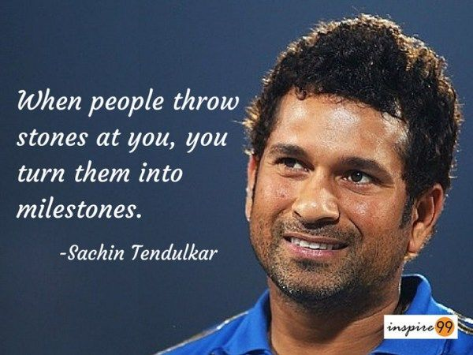

Acheivements Of Sachin Tendulkar
- He is the highest run scorer of all time in international cricket, and the only player to have scored one hundred international centuries, the first batsman to score a double century in a One Day International (ODI).
- The Holder Of The Record For The Most Runs In Both Test And ODI Cricket, And The Only Player To Complete More Than 30,000 Runs In International Cricket.
- He Is Affectionately Known As "Little Master" or "Master Blaster".
- Tendulkar Received The Arjuna Award In 1994 For His Outstanding Sporting Achievement, the Khel Ratna Award in 1997, India's Highest Sporting Honour, And The Padma Shri And Padma Vibhushan Awards In 1999 And 2008, Respectively, India's Fourth- And Second-Highest Civilian Awards